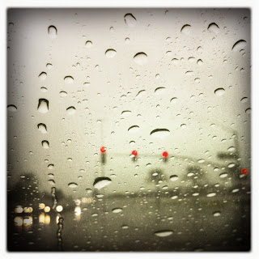

Recovered weblog entry
Shadows in the rain

I woke up in my clothes again this morning
I don't know exactly where I am
And I should heed my doctor's warning
He does the best with me he can
He claims I suffer from delusion
But I'm so confident I'm sane
It can't be an optical illusion
So how can you explain
Shadows in the rain
-Sting, Shadows in the Rain
Lens: Libatique 73
Film: Ina's 1935